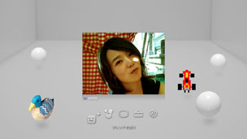

AVチャットを開始／終了する
この機能を使うには、システムソフトウェアのアップデートが必要になる場合があります。
フレンドリストに登録した相手と、AVチャットができます。音声チャットをするときは、別売りの音声入出力機器（ヘッドセットなど）が必要です。ビデオチャットをするときは、音声入出力機器と別売りのUSBカメラが必要です。
AVチャットを開始する
1. |
|
|---|---|
2. |
|
3. |
画面上の操作パネルから |
4. |
メッセージを入力し、［送信］を選ぶ。  相手が参加すると相手の映像が表示され、AVチャットを開始できます。 |
 （フレンド）から
（フレンド）から （新しいチャットを開始する）を選ぶ。
（新しいチャットを開始する）を選ぶ。 （AVチャット）を選ぶ。
（AVチャット）を選ぶ。 （フレンドを誘う）を選ぶ。
（フレンドを誘う）を選ぶ。ヒント
- PS3™は、音声チャットとビデオチャットに対応しています。チャット機能に対応したゲームなどを遊ぶときの操作方法については、ソフトウェアの解説書をご覧ください。
- あらかじめ、PlayStation®Networkにサインインしておく必要があります。
- 複数のフレンドを招待できますが、チャットルームにアバターが表示されるのは、フレンドを選択する画面でチェックした順に5人です。
- チャットルームには最大6人まで参加できます。
- PlayStation®Networkのアカウント設定でチャットの利用が制限されているときは、AVチャットを利用できません。視聴年齢制限（パレンタルロック）機能について詳しくは、［XMB™の基本操作］＞［視聴年齢制限（パレンタルロック）機能を使う］をご覧ください。
- PS3™では、USBヘッドセット／Bluetooth®ヘッドセット／EyeToy™ USBカメラ／PlayStation®Eye／USBビデオクラスに対応したUSBカメラが使えます。
- USBハブを使ってUSBカメラを接続するときは、USB2.0に対応したハブを使ってください。USB2.0に対応していないハブでは、画像が乱れたり、表示されなかったりすることがあります。
- 周辺機器の対応機種および使いかたについては、機器の販売元へお問い合わせください。
チャットルームから退出する（AVチャットを終了する）
AVチャット中に、画面上の操作パネルから （退出）を選びます。
（退出）を選びます。
ヒント
AVチャットを開始した人が退出すると、チャットルームが終了します。